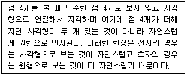
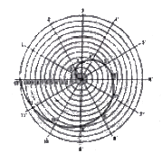
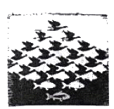
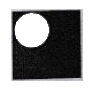
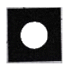
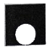
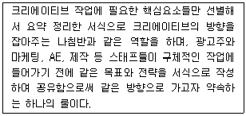
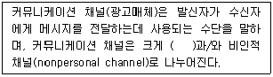
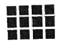

시각디자인기사 (2019-04-27 기출문제)
1과목: 시각디자인론
1. 주지상표 여부의 판단 요소가 아닌 것은?
- 상표의 사용기간
- 매출 및 시장점유율
- 상표의 사용방법
- 유통기한 표시
(정답률: 59%)

2. 아이디어의 발상방법 중 본래의 의도와 반대되는 표현에 의해 상대방의 자각을 유도해내는 반어적 태도 또는 방식을 일컫는 용어는?
- 풍자(satire)
- 아이러니(irony)
- 아이리스 인(iris in)
- 아이디얼리즘(idealism)
(정답률: 76%)
3. 캐럭터디자인 중 일본에서 발달된 인물 캐릭터의 형태로 실제 비율을 무시하여 머리가 전체의 2분의 1을 차지하고 인상의 특징을 강조하여 몸을 작게 한 일종의 변형구조로 된 캐릭터의 유형은?
- DM 캐릭터
- SD 캐릭터
- Fancy 캐릭터
- Dolls 캐릭터
(정답률: 71%)
4. 창조적 아이디어 발상법으로 쓰이지 않는 것은?
- 입출력법(Input-Output)
- 브레인스토밍(Brain Storming)
- 시넥틱스(Synectics)
- ST법(Sensitivity Training)
(정답률: 48%)
5. 교통광고(transportation advertising)의 가장 큰 특징은?
- 무조건적 노출
- 속보성
- 대량전달
- 기록 보관성
(정답률: 64%)
6. 아이디어가 불현 듯 떠오르는 사고과정의 한 유형을 무엇이라 지칭하는가?
- 영감(Inspiration)
- 잠복(Incubation)
- 분석(Analysis)
- 검증(Verification)
(정답률: 95%)
7. 시각디자인을 기능별로 분류하였을 때 설명과 내용으로 알맞지 않은 것은?
- 지시적 가능: 신호, 문자, 활자, 통계, 도표, 지도, 패키지 등 어떤 것을 가리키거나 문제 해결의 내용을 포함하고 있는 것
- 설득적 기능: 포스터, 신문광고, 잡지광고, TV광고, C.G와 같이 일정대상을 감화시켜 소기의 목적을 이루기 위한 것
- 상징적 기능: 심벌마크, 패턴, 일러스트레이션 등으로 시각적인 언어로 표현되는 것
- 기록적 또는 표현적 기능: 사진, 영화, TV 등과 같은 것으로 오늘날 기술발달로 확대되고 있는 것
(정답률: 58%)
8. 저작권법상 저작재산권의 보호기간은?
- 저작자의 생존하는 동안과 공표된 때부터 40년간
- 저작자의 생존하는 동안과 공표된 때부터 70년간
- 저작자의 생존하는 동안과 사망 후 40년간
- 저작자의 생존하는 동안과 사망 후 70년간
(정답률: 59%)
9. 바우하우스의 교육과정에 속하지 않는 것은?
- 회화 분석 교육
- 자유로운 구성과 표현기법 교육
- 복고풍 수공예 장식교육
- 형태 교육
(정답률: 75%)
10. 산업디자인진흥법에 의거하여 상품의 외관, 기능, 재료, 경제성 등을 종합적으로 심사하여 디자인의 우수성이 인정된 상품에 부여하는 제도는?
- KS 마크
- G 마크
- IDEA 마크
- GD 마크
(정답률: 69%)
11. 잡지와 같은 지속적인 출판물 제작 시, 인쇄물의 시각적 질서와 일관성을 유지하고 작업시간을 절약하고 지면에 통일감을 부여하는 레이아웃의 수단은?
- 스탠다드(Standard)
- 그리드(Grid)
- 모듈(Module)
- 폼(Form)
(정답률: 84%)
12. 기업이미지의 SWOT분석에 대한 설명으로 틀린 것은?
- 강점요인
- 약점요인
- 기회요인
- 포지셔닝
(정답률: 78%)
13. 근접성(Proximity)의 설명으로 틀린 것은?
- '게슈탈트의 지각 원리' 중 하나이다.
- 가까운 것들끼리 묶어놓으면 디자인의 복잡성이 늘어나고 요소들 사이의 연관성이 약화 된다.
- 레이아웃이 인접해있으면 서로 특별한 관계가 있다는 뜻이 돼서 레이아웃 디자인으로 생각해야 할 경우가 있다.
- 디자인에서 연관성으로 나타내는 가장 강력한 도구 중 하나이고 일반적으로 경쟁관계에 있는 다른 시각적 단서(예, 유사성)보다 강력한 힘을 발휘한다.
(정답률: 74%)
14. 편집디자인의 요소가 아닌 것은?
- Planning
- Layout
- Typography
- Signal
(정답률: 69%)
15. 디자인운동과 국가의 연결이 옳은 것은?
- DWB - 벨기에
- De Stijl - 독일
- Art Nouveau - 이태리
- Secession - 오스트리아
(정답률: 52%)
16. 브레인스토밍(Brain Storming)의 기본 규칙에 해당되지 않은 것은?
- 어떤 아이디어도 비판하지 않는다.
- 자유분방하게 많은 아이디어를 도출한다.
- 엉뚱하고 와일드한 아이디어도 좋다.
- 독창적인 아이디어 개발을 위한 고객의 제안을 통합하는 과정이다.
(정답률: 92%)
17. 모듈러(modular)와 관련 있는 것은?
- 장식미
- 황금척도
- 동적 균형
- 신조형 양식
(정답률: 61%)
18. 디자인프로세스의 문제수립과 분석 등에 해당하는 과정은?
- 계획
- 발견
- 창조
- 적용
(정답률: 48%)
19. 소비자들이 직접 생산자의 입장이 되어 아이디어를 풀어 놓기 작하면서, 스스로 제품을 창조하는 소비자를 일컫는 용어는?
- 아티젠
- 커스토머
- 크리슈머
- 컨슈머
(정답률: 58%)
20. 디자인보호법상 디자인등록을 받을 수 있는 디자인은?
- 국기, 국장, 군기, 훈장, 포장, 기장 기타 공공기관 등의 표장과 유사한 디자인
- 디자인이 주는 의미나 내용 등이 일반인의 통상적인 도덕관념에 어긋나는 디자인
- 타인의 업무에 관계되는 물품과 혼동이 되는 디자인
- 물품의 형상, 모양, 색채, 또는 이들을 결합한 것으로 시각을 통해 미감을 일으키게 하는 디자인
(정답률: 88%)
2과목: 조형심리학
21. 일직선상을 하나의 원이 미끄러지지 않고 굴러갈 때 원 위의 한 점이 그리는 곡선은?
- 아르키메데스 와선
- 인벌류트 곡선
- 사이클로이드 곡선
- 트로코이드 곡선
(정답률: 67%)
22. 작품 평가자 간의 오차를 유발시키는 선입견 중 후광효과(halo effect)에 대한 설명으로 옳은 것은?
- 평가자 자신의 특징과는 반대 방향으로 평가한다.
- 잘 알지 못하는 대상 등은 중성적 평가를 하려고 한다.
- 숙지하고 있는 혹은 자아관여가 강한 대상을 좋게 평가 한다.
- 우수한 사람이라는 인상을 받으면 그 사람이 어떤 행동을 하더라도 높이 평가하려고 한다.
(정답률: 83%)
23. 치수기입 시 지름을 나타내는 기호는?
- ø
- R
- T
- C
(정답률: 70%)
24. 시각적 특성에 따라 정보를 그루핑 하는, 그루핑 법칙(Gestalt grouping laws)에 적용되지 않는 성질은?
- 유사성
- 공간성
- 폐쇄성
- 연속성
(정답률: 56%)
25. 심리학자 루빈(Rubin)이 말한 '일반적으로 바탕에 대한 도형이 되기 쉬운 조건'과 거리가 먼 것은?
- 시야의 중앙을 차지함
- 큰 형태 보다는 작은 형태
- 이질성이 있는 것 보다는 동질성이 있는 것
- 에워싸고 있는 형보다 에워싸여진 형
(정답률: 38%)
26. 다음 내용에 해당하는 것은?(문제 오류로 가답안 발표시 1번으로 발표되었지만 확정답안 발표시 1, 3, 4번이 정답처리 되었습니다. 여기서는 가답안인 1번을 누르시면 정답 처리 됩니다.)

- 간결성의 법칙
- 유사성의 법칙
- 연속성의 법칙
- 폐합의 법칙
(정답률: 67%)
27. 다음 그림과 같은 곡선은?

- 쌍곡와선
- 아르키메데스와선
- 5각형법 와선
- 대수와선
(정답률: 84%)
28. 피보나치(Fibonacci) 수열과 관계가 없는 것은?
- 조개의 단면
- 솔방울의 구조
- 나뭇잎의 형
- 표범의 무늬
(정답률: 77%)
29. 옵아트 작가들이 사용한 실험심리학의 응용 방법들과 거리가 먼 것은?
- 잔상현상에 의한 색재의 전이와 변화
- 과학기술의 응용 또는 산업기계를 차용한 스타일
- 망막의 과잉부하가 가져오는 격한 운동감
- 도지반전에 의한 원근 감각의 혼란
(정답률: 74%)
30. 에스테티카(Aesthetica)에서 총체적인 감성적 인식을 구성하는 구획이 아닌 것은?
- 질서
- 사유
- 발상
- 기호화
(정답률: 18%)
31. 벌라인(D. Berlyne) 은 미학적 즐거움의 심리학적 근원을 무엇이라고 설명했는가?
- 심리적 각성
- 심리적 선호
- 심리적 복잡성
- 심리적 욕구의 승화
(정답률: 29%)
32. 디자인의 원리 중 공간에 대한 설명으로 틀린 것은?
- 공간감이나 거리감을 나타내는 가장 쉬운 방법은 습기에 차이를 주는 것이다.
- 원근에 의한 공간표현방법으로 직선원근법, 대기원근법, 과장원근법, 다각원근법 등이 있다.
- 공간표현방법으로 크기, 원근, 중첩, 투명에 의한 표현방법이 있다.
- 두 도형 사이에 일어나는 전후의 깊이에 대한 착각은 강조에 의한 표현방법이다.
(정답률: 32%)
33. 다음 중 모든 변의 길이가 같고 내각의 크기가 모두 같은 형을 통틀어 무엇이라고 하는 가?
- 직사각형
- 사다리꼴
- 마름모꼴
- 정다각형
(정답률: 84%)
34. 다음 그림의 가운데 부분은 '새'로 보이기도 하고 '물고기'로 보이기도 하는데 이것은 형태주의 심리학의 어떤 원리를 응용한 것인가?

- 전경과 배경의 원리
- 좋은 형태의 원리
- 유사성의 원리
- 근접성의 원리
(정답률: 79%)
35. 두 개 이상의 패턴이 30° 이하의 각도로 겹쳐지며 나타는 패턴은?
- 문자형 패턴
- 기호적 패턴
- 무아레 패턴
- 나선형 패턴
(정답률: 68%)
36. 움직임이 없고 어떤 감정도 나타나지 않는 효과를 주는 형의 배치(Position)는?



(정답률: 89%)
37. 미의 탐구 영역을 설명하는 것 중 다른 하나는?
- 정신성과 자유가 존재한다.
- 노력하지 않는 완전성을 가지고 있다.
- 인간의 활동에서 나오는 소산이다.
- 아름다움을 예술을 통해 표현한다.
(정답률: 78%)
38. 예술의 기능에 대한 설명이 아닌 것은?
- 무엇보다 예술은 미를 산출한다.
- 예술은 물질과 정신에 형식을 부여한다.
- 예술은 재현, 재생이며, 표현이다.
- 예술은 미적 경험을 필요로 하지 않는다.
(정답률: 85%)
39. 시지삭의 원리 중 니콜슨의 작품 '정물'에서 강조된 디자인의 원리는?
- 선
- 채색
- 변화
- 통일
(정답률: 41%)
40. 그림과 같은 대칭 운용은?
- 이동
- 회전
- 경사
- 반사
(정답률: 87%)
3과목: 광고학
41. 기업이 소비자와 유효하게 교류하기 위해서는 먼저 소비자의 생활양식(Life Style)을 파악해야 하는데 Life Style과 관계가 없는 것은?
- 사회 - 경제적 배경에 따라서 결정
- 활동 - 일과 여가시간에 하는 것
- 시장반응 - 상품의 성장단계와 경쟁상태
- 의견 - 사회적 쟁점에 대한 견해 및 자기평가
(정답률: 59%)
42. TV 광고의 특징이 아닌 것은?
- 여러 소비자에게 도달 가능
- 시청 시간별 세분화 가능
- 창조성의 제약이 없음
- 높은 회전율
(정답률: 43%)
43. 프로모션에 관한 설명으로 틀린 것은?
- 프로모션은 전략적으로 장기적인 판매 또는 이용의 추진을 목표로 한다.
- 프로모션의 주요 목표는 브랜드 구매 의도를 높이는 것이다.
- 프로모션을 통해 시험사용이나 반복구매를 증가시킬 수 있다.
- 가격 프로모션을 자주 할 경우 브랜드 이미지에 부정적인 영향을 미칠 수 있다.
(정답률: 58%)
44. 광고대행사의 업무 중 조사국에서 주로 하는 일은?
- 광고기획서 작성 및 프레젠테이션
- 광고물의 시안 및 제작물의 관리보관
- 시장동향 및 경쟁제품 분석
- 광고주 연락을 유지하는 어카운트서비스와 신규매체 개발
(정답률: 82%)
45. 문자가 가지는 기호 능력을 통하여 사람들이 그 의미하는 바를 전달받게 되는 광고메시지의 요소는?
- 섬네일(Thumbnail)
- 카피(Copy)
- CM 플래너(CM Planner)
- 콘티 라이터(Conti writer)
(정답률: 84%)
46. 다음 광고매체 중 쌍방향 커뮤니케이션의 형태는?
- 신문
- 잡지
- 라디오
- 인터넷
(정답률: 89%)
47. 광고의 경제적 기능이 아닌 것은?
- 광고는 대량생산을 촉진하여 경제성장에 기여하는 경우가 많다.
- 광고는 자원의 분배에 영향을 준다.
- 광고는 상품을 차별화함으로써 기업의 독점력을 높이는 역할을 한다.
- 광고는 사회변화에 중요한 영향력을 행사한다.
(정답률: 29%)
48. 방송매체의 장점이 아닌 것은?
- 오락매체, 가족매체로서의 성격이 강하다.
- 수용자의 선택권이 자유롭다.
- 전달되는 내용이 간결하고 압축적이다.
- 현실성과 친근감이 매우 높다.
(정답률: 38%)
49. 광고 크리에이티브 전략이 아닌 것은?
- 마케팅전력을 토대로 수립되어야 한다.
- 마케팅 전략의 상위개념이다.
- 소비자에게 전달해야 할 핵심적인 메시지이다.
- 전략은 브리프(brief)로 문서화되어야 한다.
(정답률: 56%)
50. 그린 마케팅의 개념이 아닌 것은?
- 기업 활동의 기능과 목표를 환경적인 가치 위에서 운영
- 소비자들의 단순한 욕구나 수요충족을 지향하는 마케팅
- 인간과 자연의 상호 의존성에 초점을 맞춘 마케팅
- 공해 물질 배출량이 적거나, 폐기물을 재활용한 녹색 상품 개발
(정답률: 85%)
51. 시장세분화를 하는 데는 다양한 세분화 변인들이 이용될 수 있다. 다음 중 세분화 변인들에 관한 설명으로 옳지 않은 것은?
- 인구 구조 변인으로 연령, 성별, 인종, 세대 형태, 주택 소유 형태, 교육, 직업, 소득 등이 있다.
- 소비자의 라이프 스타일에 따른 시장세분화는 심리 구조적 세분화이다.
- 같은 지역에 사는 사람은 유사한 필요를 공통적으로 갖는다는 데서 지리 구조적 세분화를 할 수 있다.
- 행동특성에 따른 세분화는 특정한 광고 소구에 반응하는 소비자만을 목표 시장으로 삼는 다.
(정답률: 68%)
52. 사람들의 태도나 행동에 직간접적으로 영향을 주는 모든 집단을 말하는 것으로, 특히 사람들의 구매행동에 중요한 영향을 미치는 것은?
- 준거집단
- 소비자
- 사회계급
- 문화
(정답률: 69%)
53. 포지셔닝(Positioning)에 대한 설명으로 옳은 것은?
- 문제의 개요를 파악하고 기존문헌과 자료수집을 시작하는 것
- 자유로운 발상력과 이상적인 비판력을 분리시키는 것
- 프로덕트 아이디어를 기술적으로 실현 가능한 것으로 만들어가는 것
- 상품이나 기업을 소비자의 마음속에 어떻게 자립잡게 만들것인가 하는 전략
(정답률: 89%)
54. 통합 마케팅 커뮤니케이션(IMC)의 개념과 가장 관계없는 것은?
- SP
- PR
- PC
- DM
(정답률: 63%)
55. 다음 중 광고의 종류가 아닌 것은?
- 광고 소구 내용별 분류인 상품광고, 기업광고
- 광고 대상별 분류인 소비자광고, 산업광고, 유통광고
- 광고 형식별 분류인 자의적 광고와 타의적 광고
- 광고 매체별 분류인 인쇄광고, 전파광고, 옥외광고, 인터넷광고
(정답률: 75%)
56. 다음 보기에서 설명하고 있는 것은?

- Creative Platform
- Creative Concept
- Creative Brief
- Creative Idea
(정답률: 53%)
57. 잡지 광고의 특성에 해당되지 않는 것은?
- 광고의 반응이 상당히 완만하다.
- 4대 매체 중 매체에 대한 소비자의 신뢰감이 가장 높다.
- 독자의 광고 선택성이 있고, 강한 관심을 끌 수 있다.
- 설득 소구력이 크며, 논리부여에 적합하다.
(정답률: 67%)
58. 광고회사의 업무 중 스포츠 마케팅, 박람회, 전시회, 콘서트 등의 이벤트와 점두간판, 옥외광고 등의 P.O.P(point of purchase)광고를 다루는 부문은?
- 기획부문
- SP부문
- PR부문
- 크리에이티브 부문
(정답률: 29%)
59. 라이프스타일에 관한 설명으로 옳지 않은 것은?
- 라이프스타일은 소비자 개개인의 생활방식을 이해하는데 초점을 두고 있다.
- 라이프스타일은 소비자들이 시간을 소비하는 방법, 관심사, 그리고 소비자들의 의견에 의해 확인되는 생활의 유형을 의미한다.
- 라이프스타일에 따라 소비자 행동을 예측할 수 잇다.
- 유사한 라이프스타일을 가지는 소비자집단을 파악하여 시장을 세분화할 수 있다.
(정답률: 55%)
60. 다음 ( )안에 들어갈 내용으로 옳은 것은?

- 송수신자(sender-receivers)
- 채널(channel)
- 인적채널(personal channel)
- 메시지(message)
(정답률: 89%)
4과목: 색채학
61. 오스트발트 등가색환에 있어서의 조화를 기호로 나타낸 것 중 보색조화에 해당하는 것은?
- 2ic – 4ic
- 8ni - 14ni
- 4Pg – 12Pg
- 2Pa - 14Pa
(정답률: 46%)
62. 적색에 백색의 색료를 혼합했을 때 채도의 변화는?
- 낮아진다.
- 혼합하기 전과 같다.
- 높아진다.
- 조금 높아진다.
(정답률: 79%)
63. 검정 사각형 사이로 백색 띠가 교차하는 공간 중앙에 회색 잔상이 느껴지게 되는데 이와 같은 현상은?

- 푸르킨예 현상
- 동화현상
- 융합현상
- 허먼 그리드 현상
(정답률: 74%)
64. 두 색이 부조화한 색일 경우, 공통의 양상과 성질을 가진 것으로 배색하면 조화한다는 저드(D. B. Judd)의 색채조화 원리는?
- 질서의 원리
- 숙지의 원리
- 유사의 원리
- 비모호성의 원리
(정답률: 70%)
65. 먼셀(Munsell)표기법에 맞는 물체색의 3속성은?
- 색채,혼색, 현색
- 색상, 명도, 채도
- 색각, 색감, 색약
- 색상, 순도, 흰색도
(정답률: 93%)
66. 오스트발트(Ostwald) 조화론의 등색상삼각형의 조화가 아닌 것은?
- 등순색계열의 조화
- 등백색계열의 조화
- 등흑색계열의 조화
- 등명도계열의 조화
(정답률: 69%)
67. 7YR에 대한 설명으로 옳은 것은?
- Y 와 R 의 중간 색상으로 R에 더 가깝다.
- Y 와 R 이 같은 비율로 혼합되어 있다.
- Y 와 R 의 중간 색상으로 Y에 더 가깝다.
- 직관적 표기법으로 알 수가 없다.
(정답률: 72%)
68. 혼합되는 각각의 색 에너지(energy)가 합쳐져서 더 밝은 색을 나타내는 혼합은?
- 감산혼합
- 중간혼합
- 가산혼합
- 색료혼합
(정답률: 85%)
69. 다음 중 감법혼색과 관련이 있는 것은?
- 옵셋(offset) 인쇄
- 3원색은 Red, Green, Blue
- 3원색의 혼합색은 백색
- 색광의 혼합
(정답률: 77%)
70. 문∙스펜서의 조화분류에서, 미도(美度)를 설명한 것으로 틀린 것은?
- 균형있게 선택된 무채색의 배색은 아름다움을 나타낸다.
- 동일색상은 조화롭다.
- 같은 명도의 조화는 미도가 높다.
- 색상, 태도를 일정하게 하고 명도만 변화시키는 경우 많은 색상 사용시 보다 미도가 높다.
(정답률: 40%)
71. 한국산업표준(KS)을 기준으로 기본색 빨강의 색상범위에 해당하는 것은?
- 5RP 3.5/4.5
- 5YR 8/4
- 10R 9/5
- 7.5R 4/14
(정답률: 56%)
72. 영∙헬름홀츠의 3원색설에 관한 설명으로 옳은 것은?
- 세 가지 시세포가 망막에 분포하여 여러 가지 색지각이 일어난다는 설이다.
- 반대색설이라고도 한다.
- 이화작용과 동화작용에 의해서 색감각이 이루어진다.
- 순응, 대비, 잔상현상으로 색각 현상을 설명할 수 있다.
(정답률: 64%)
73. 똑같은 에너지를 가진 각 파장의 단색광에 의하여 생기는 밝기의 감각은?
- 시감도
- 명순응
- 색순응
- 항상성
(정답률: 54%)
74. 기억색에 대한 설명으로 가장 옳은 것은?
- 대상의 실제색과 같게 기억한다.
- 대상의 표면색보다 선명하게 기억한다.
- 대상의 실제색보다 더 채도가 낮은 것으로 기억한다.
- 대상의 실제색보다 색상차를 크게 기억한다.
(정답률: 52%)
75. 어두운 색 가운데서 대비되어진 밝은색은 한층 더 밝게 느껴지고, 밝은색 가운데 있는 어두운 색은 더욱 어둡게 느껴지는 현상은?
- 동화 현상
- 색상 대비
- 명도 대비
- 채도 대비
(정답률: 78%)
76. 색채계획의 과정에서 색채 심리 분석에 해당하지 않는 것은?
- 색채 이미지 측정
- 유행 이미지 측정
- 상품 이미지 측정
- 형태 이미지 측정
(정답률: 44%)
77. 조명이나 관측조건이 달라도 주관적 색체 지각으로는 물체색의 변화를 느끼지 못하는 현상은?
- 색의 항상성
- 색의 시인성
- 색의 주목성
- 색의 연색성
(정답률: 73%)
78. 색채 조절의 효과로 가장 거리가 먼 것은?
- 마음의 안정을 찾는다.
- 일의 능률을 향상시킨다.
- 눈과 정신의 피로를 완화시킨다.
- 개인의 취향을 반영할 수 있다.
(정답률: 85%)
79. 보색에 관한 설명으로 옳은 것은?
- 두 색을 혼합했을 때 무채색이 되는 색을 보색이라 한다.
- 색상환에서 서로 인접한 색이다.
- 먼셀 색상환에서 빨강의 보색은 파랑이다.
- 가법혼색에서 초록의 보색은 노랑이다.
(정답률: 65%)
80. 스캔된 원본의 색들과 인쇄된 출력물의 색들을 맞추기 위한 색채관리시스템(Color Management System, CMS)의 기준이 되는 색공간은?
- RGB 색체계
- CMYK 색체계
- CIE XYZ 색체계
- HSB 색체계
(정답률: 35%)
5과목: 사진 및 인쇄제판론
81. 제판 감광 재료 중에서 네거티브 PS판과 와이프온판에 현재 가장 많이 사용되지 않는 감광재료는?
- 디아조 수지
- 광가교형 감광성수지
- 광중합형 감광재료
- 중크롬산염 콜로이드
(정답률: 53%)
82. 섬유의 표면을 아교, 송진, 녹말, 합성수지와 같은 교질 재료로 피복시키는 종이 제조공정은?
- 고해(beating)
- 사이징(sizing)
- 전충(loading)
- 착색(coloring)
(정답률: 53%)
83. 구성, 조립, 편집의 뜻으로 사진에서 둘 이상의 화면을 창조적인 순서로 결합시켜 현실과는 다른 새로운 장면이나 사상적 내용을 표현하는 방법은?
- 콜라주(collage)
- 몽타주(montage)
- 모자이크(mosaic)
- 파피에 콜레(papier colle)
(정답률: 41%)
84. 유리재질의 제품 촬영 시 주의해야 할 사항으로 옳은 것은?
- 직사광을 사용하여 난반사를 만들어 주어야 한다.
- 유리제품에는 반드시 확산광을 사용하지 않는다.
- 피사체의 경계선에는 밝거나 검은선이 생기지 않도록 한다.
- 불필요한 빛과 주위의 배경이 유리에 반사되지 않도록 한다.
(정답률: 78%)
85. 디지털 인쇄의 특징으로 옳지 않은 것은?
- 친환경 인쇄가 가능하다.
- 공정이 단축되고 인쇄시간이 짧다.
- 데이터의 변경 수정이 어렵지만 보관은 용이하다.
- 다품종 소량 생산의 인쇄출판시스템에 적합하다.
(정답률: 70%)
86. 화학펄프의 배합률이 70% 이상이고 나머지는 쇄목펄프로 구성되어 있으며 교과서, 사적, 잡지 본문 등에 많이 사용하는 종이는?
- 갱지
- 상갱지
- 상질지
- 중질지
(정답률: 61%)
87. 다음 중 일반적으로 그라비어인쇄 방식을 사용하는 인쇄물은?
- 지폐
- 신문
- 박스
- 캘린더
(정답률: 68%)
88. MQ 현상약의 주성분은?
- 메톨과 페니돈
- 메톨과 아황산나트륨
- 메톨과 하이드로퀴논
- 패니돈과 하이드로퀴논
(정답률: 70%)
89. 헬레이션 방지층의 주된 역할은?
- 잠상 형성 방지
- 필름의 신축 방지
- 현상 시 화학반응 방지
- 필름베이스에서 빛의 반사 방지
(정답률: 58%)
90. 촬영, 현상된 필름과 같은 크기로 인화하는 것을 무엇이라 하는가?
- 확대인화
- 밀착인화
- 시험인화
- 부분인화
(정답률: 69%)
91. 플래시의 가이드넘버(GN)가 80이고 촬영거리가 10m일 때 적정 조리개 수치는?(단, GN는 거리의 단위가 m인 경우로 계산한다.)
- F4
- F5.6
- F8
- F11
(정답률: 75%)
92. 잉크를 피인쇄체에 부착시키기 위해 압력을 가하는 방법이 아닌 것은?
- 평압식
- 윤전식
- 발포식
- 원압식
(정답률: 68%)
93. 사진이나 인쇄 화상의 진하고 옅은 정도를 객관적으로 나타내기 위한 척도는?
- 농도
- 광택
- 콘트라스트
- 그라데이션
(정답률: 55%)
94. 피사계 심도를 조절하는 방법과 가장 거리가 먼 것은?
- 조리개 조절
- 조명거리 조절
- 촬영거리 조절
- 렌즈의 초점거리 조절
(정답률: 66%)
95. 컬러네거티브 필름의 현상약품에 해당되는 것은?
- C – 41
- E -6
- D – 72
- D - 76
(정답률: 50%)
96. 태양이나 밝은 전구와 같은 강한 광원이 사진에 포함되었을 때 화면상에 조리개 모양의 이미지가 만들어지는 현상은?
- 고스팅(ghosting)
- 비네팅(vignetting)
- 솔라리제이션(solarizating)
- 이레디에이션(irradiatin)
(정답률: 42%)
97. 렌즈의 조리개를 극단적으로 조이면 해상도가 떨어지는 원인은?
- 빛의 회절
- 빛의 간섭
- 빛의 굴절
- 빛의 산란
(정답률: 44%)
98. 면적이 같고, 깊이를 다르게 하여 잉크가 묻는 양을 변화시켜 주는 그라비어 제판법은?
- 망점 그라비어
- 덜젠 그라비어
- 컨벤셔널 그라비어
- 하드 도트 그라비어
(정답률: 45%)
99. 인쇄의 4방식에 해당하지 않는 것은?
- 오프셋인쇄
- 스크린인쇄
- 잉크젯인쇄
- 그라비어인쇄
(정답률: 59%)
100. 패닝기법에 대하여 가장 올바르게 설명한 것은?
- 피사체의 움직임에 따라 카메라를 함께 움직이면서 촬영하는 기법
- 피사체는 움직이고 카메라는 고정하여 촬영하는 기법
- 카메라는 움직이고 피사체는 고정하여 촬영하는 기법
- 피사체와 카메라를 동시에 고정하여 촬영하는 기법
(정답률: 60%)